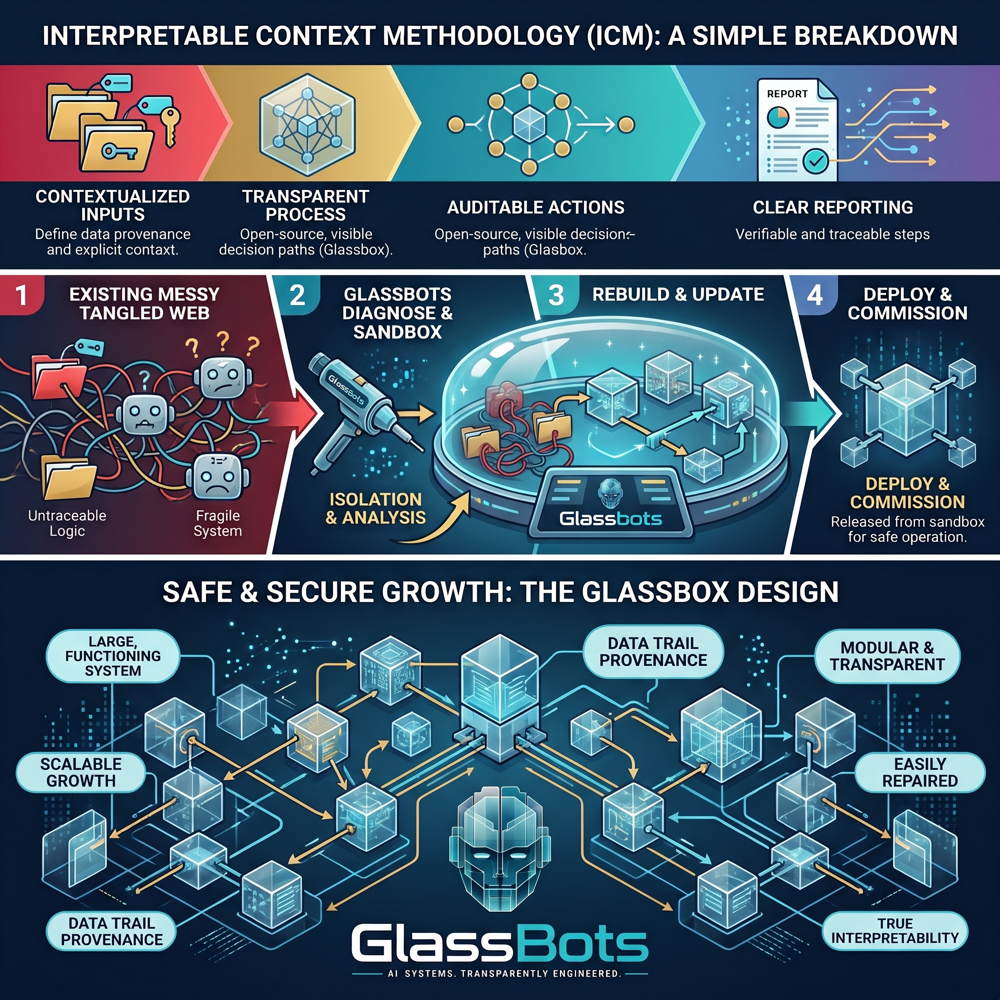

It's the hours of human attention it takes to get one finished piece of work out of your system. A healthy system runs under 2. If yours is 10, you don't have automation — you have a very expensive employee who can't finish anything without you.
Nothing to install. No access to grant. Nothing to send. Most Diagnostics deliver next business day.
It's usually a bigger number than our fee. That's the entire commercial argument, and it makes itself.
If two or more of those are true, the problem isn't the model. It's the architecture around it. That's measurable, and it's fixable. Read the teardown: your folders won't tell you when work stopped →
We build AI systems the way well-run infrastructure has always worked: numbered folders are the stages, plain files are the contracts, and "done" is a fact a script can check — not an opinion. Every step exists as a document anyone on your team can open, read, and edit.
invoices/ ├── shared/ │ └── invoices.json ← material arrives └── stages/ ├── 01_summarise/ │ ├── CONTEXT.md ← the contract: │ │ inputs, process, acceptance │ └── output/ ← what it actually produced └── 02_dispatch/
| You want to… | Typical AI build | GlassBots |
|---|---|---|
| Change how a step behaves | Developer, code, redeploy | Edit a text file |
| See what happened yesterday | Build a dashboard | Open the folder |
| Prove a task finished | Ask someone | The acceptance check ran green |
| Explain a decision | Buy an explainability layer | There was never anything hidden |
| Hand it to a new hire | Weeks of undocumented context | Hand them the folder |

We configure your system to run on the AI providers you already pay for. Switching providers is a configuration change, not a rebuild.
The whole system is a folder on infrastructure you control. There's no GlassBots platform to leave, because there's no GlassBots platform.
Every engagement ships with an offboarding pack: how to revoke our access in one click, and how the system keeps running without us. Published before you ask.
A fixed-price assessment of your AI system:
Health Score: 37/100 — Failing. Handholding Ratio: 9.4 hours per completed item. Top cause: your permission rules make stopping the safe choice — 84% of refused actions were later approved unchanged, so the rules added delay without adding safety.
See the full sample report → — fictional company, real tool, unedited output.
Foundation pricing. Includes two free follow-up diagnostic reviews — a founding-client programme with an end date stated when you book.
Book the DiagnosticPrefer to start free? Take the scorecard — anonymous, nothing stored.
We'd rather tell you now:
One fixed price. One folder. One number that explains where your evenings went — and what they're costing you.
Not ready? Nothing you tap in the scorecard leaves your browser.